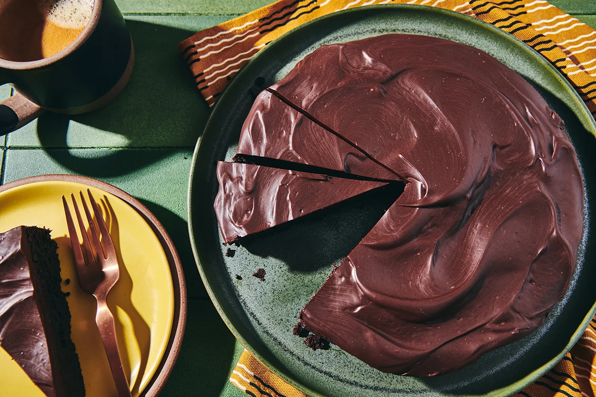

Home
Chocolate Cake

Description
This chocolate cake is light, airy, and most importantly, flourless!
Made using King Arthur's flour, and handed down over generations, this decadent chocolate cake will be popular at parties!
Ingredients
- 1 cup King Arthur's Flour
- 3 tbps cacao powder
- 1/4 cup sugar
- Two sticks of butter
- Pinch of salt
- 1 tsp baking powder
- 1 1/2 cup milk
Steps
- Preheat the oven to 200 degrees Celsius.
- Add dry ingredients to a bowl and whisk to remove any lumps.
- Make a well in the center and add the wet ingredients.
- Mix well, taking care not to overmix the batter.
- Grease a round cake pan with butter, and bake for 25-45 minutes.
- Once done, allow to cool on wire rack and serve with fruit or cream.